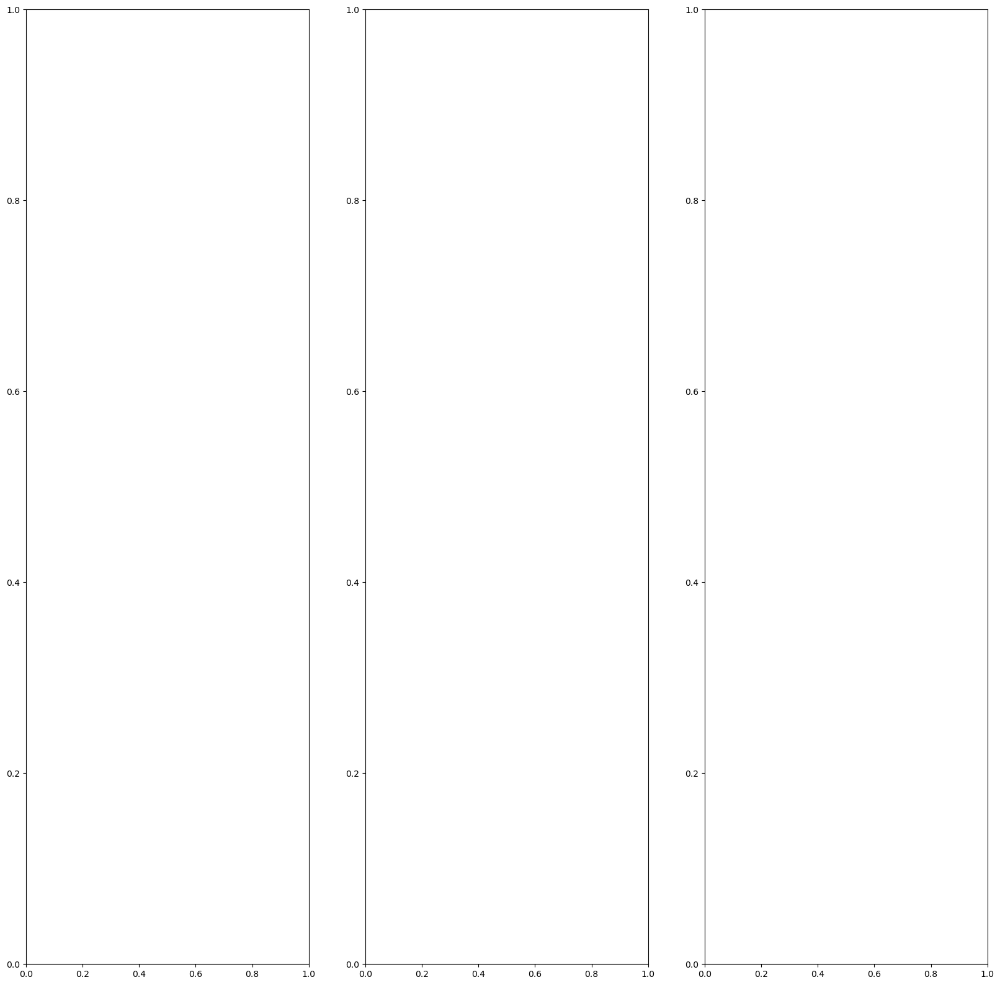
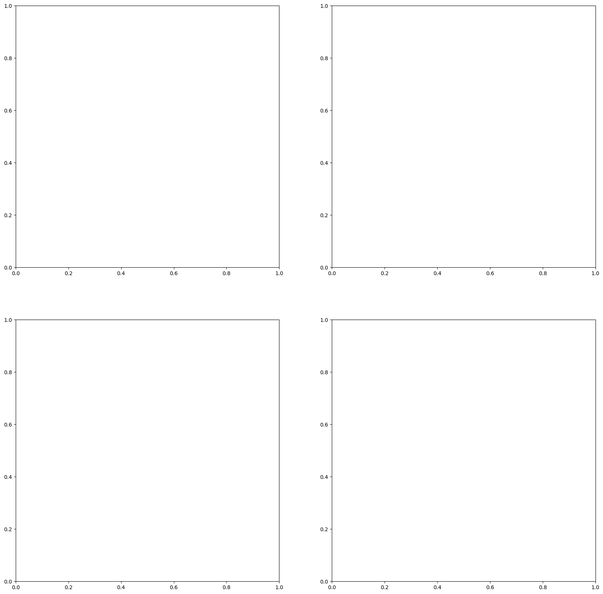
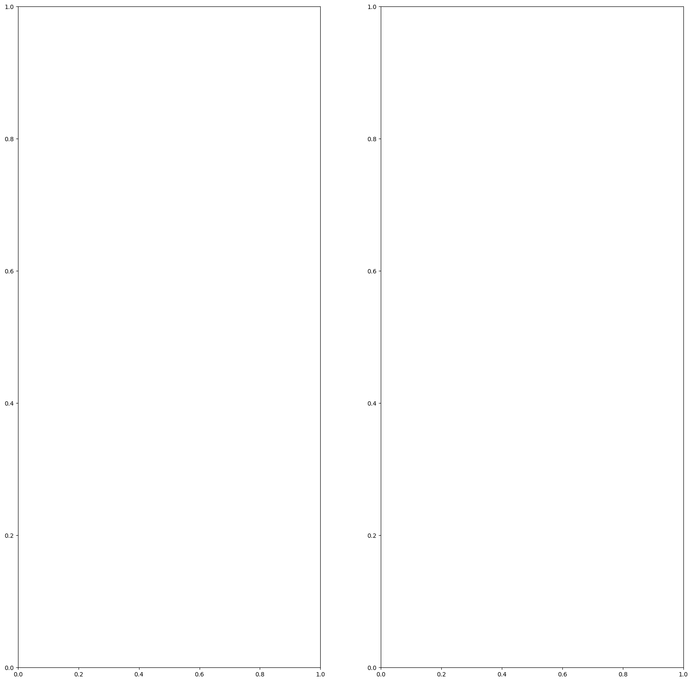

Performing raster and vector operations in Python using pyjeo
Material provided by Dr. Pieter Kempeneers
pyjeo is the follow up of PKTOOLS, a suite of utilities written in C++ for image processing with a focus on remote sensing applications. It is distributed under a General Public License (GPLv3) as a Python package.
The examples in this notebook replicate the exercises on pktools in order to appreciate the difference and still analogy for those that are familiar with pktools.
In a nutshell, the main differences between pyjeo and pktools from a user’s perspective are:
pyjeo is a Python package should be run in a Python environment, whereas pktools applications are run from the command line (e.g., in a bash shell)
pyjeo runs with images entirely in memory, whereas pktools runs most applications line per line. This makes pyjeo considerably faster, but with a larger memory footprint. However, there are some methods implemented in pyjeo to reduce the memory footprint by tiling the image
[1]:
from pathlib import Path
import numpy as np
import pandas as pd
%matplotlib inline
import matplotlib.pyplot as plt
Creating masks
pktools We create three masks using different threshold values with pkgetmask
[2]:
%%bash
pkgetmask -co COMPRESS=DEFLATE -co ZLEVEL=9 -min 1 -max 2 -data 1 -nodata 0 -ot Byte -i geodata/vegetation/ETmean08-11.tif -o geodata/vegetation/ETmean08-11_01_trhA.tif
pkgetmask -co COMPRESS=DEFLATE -co ZLEVEL=9 -min 5 -max 8 -data 1 -nodata 0 -ot Byte -i geodata/vegetation/ETmean08-11.tif -o geodata/vegetation/ETmean08-11_01_trhB.tif
pkgetmask -co COMPRESS=DEFLATE -co ZLEVEL=9 -min 0 -max 10 -data 0 -nodata 1 -ot Byte -i geodata/vegetation/ETmean08-11.tif -o geodata/vegetation/ETmean08-11_01_trhC.tif
terminate called after throwing an instance of 'std::__cxx11::basic_string<char, std::char_traits<char>, std::allocator<char> >'
bash: line 1: 19720 Aborted (core dumped) pkgetmask -co COMPRESS=DEFLATE -co ZLEVEL=9 -min 1 -max 2 -data 1 -nodata 0 -ot Byte -i geodata/vegetation/ETmean08-11.tif -o geodata/vegetation/ETmean08-11_01_trhA.tif
terminate called after throwing an instance of 'std::__cxx11::basic_string<char, std::char_traits<char>, std::allocator<char> >'
bash: line 2: 19742 Aborted (core dumped) pkgetmask -co COMPRESS=DEFLATE -co ZLEVEL=9 -min 5 -max 8 -data 1 -nodata 0 -ot Byte -i geodata/vegetation/ETmean08-11.tif -o geodata/vegetation/ETmean08-11_01_trhB.tif
terminate called after throwing an instance of 'std::__cxx11::basic_string<char, std::char_traits<char>, std::allocator<char> >'
bash: line 3: 19756 Aborted (core dumped) pkgetmask -co COMPRESS=DEFLATE -co ZLEVEL=9 -min 0 -max 10 -data 0 -nodata 1 -ot Byte -i geodata/vegetation/ETmean08-11.tif -o geodata/vegetation/ETmean08-11_01_trhC.tif
000
---------------------------------------------------------------------------
CalledProcessError Traceback (most recent call last)
Cell In[2], line 1
----> 1 get_ipython().run_cell_magic('bash', '', 'pkgetmask -co COMPRESS=DEFLATE -co ZLEVEL=9 -min 1 -max 2 -data 1 -nodata 0 -ot Byte -i geodata/vegetation/ETmean08-11.tif -o geodata/vegetation/ETmean08-11_01_trhA.tif\npkgetmask -co COMPRESS=DEFLATE -co ZLEVEL=9 -min 5 -max 8 -data 1 -nodata 0 -ot Byte -i geodata/vegetation/ETmean08-11.tif -o geodata/vegetation/ETmean08-11_01_trhB.tif\npkgetmask -co COMPRESS=DEFLATE -co ZLEVEL=9 -min 0 -max 10 -data 0 -nodata 1 -ot Byte -i geodata/vegetation/ETmean08-11.tif -o geodata/vegetation/ETmean08-11_01_trhC.tif\n')
File ~/.local/lib/python3.10/site-packages/IPython/core/interactiveshell.py:2430, in InteractiveShell.run_cell_magic(self, magic_name, line, cell)
2428 with self.builtin_trap:
2429 args = (magic_arg_s, cell)
-> 2430 result = fn(*args, **kwargs)
2432 # The code below prevents the output from being displayed
2433 # when using magics with decodator @output_can_be_silenced
2434 # when the last Python token in the expression is a ';'.
2435 if getattr(fn, magic.MAGIC_OUTPUT_CAN_BE_SILENCED, False):
File ~/.local/lib/python3.10/site-packages/IPython/core/magics/script.py:153, in ScriptMagics._make_script_magic.<locals>.named_script_magic(line, cell)
151 else:
152 line = script
--> 153 return self.shebang(line, cell)
File ~/.local/lib/python3.10/site-packages/IPython/core/magics/script.py:305, in ScriptMagics.shebang(self, line, cell)
300 if args.raise_error and p.returncode != 0:
301 # If we get here and p.returncode is still None, we must have
302 # killed it but not yet seen its return code. We don't wait for it,
303 # in case it's stuck in uninterruptible sleep. -9 = SIGKILL
304 rc = p.returncode or -9
--> 305 raise CalledProcessError(rc, cell)
CalledProcessError: Command 'b'pkgetmask -co COMPRESS=DEFLATE -co ZLEVEL=9 -min 1 -max 2 -data 1 -nodata 0 -ot Byte -i geodata/vegetation/ETmean08-11.tif -o geodata/vegetation/ETmean08-11_01_trhA.tif\npkgetmask -co COMPRESS=DEFLATE -co ZLEVEL=9 -min 5 -max 8 -data 1 -nodata 0 -ot Byte -i geodata/vegetation/ETmean08-11.tif -o geodata/vegetation/ETmean08-11_01_trhB.tif\npkgetmask -co COMPRESS=DEFLATE -co ZLEVEL=9 -min 0 -max 10 -data 0 -nodata 1 -ot Byte -i geodata/vegetation/ETmean08-11.tif -o geodata/vegetation/ETmean08-11_01_trhC.tif\n'' returned non-zero exit status 134.
pyjeo
With pyjeo we create the masks in memory in a “pythonic” way using get items without the need to write temporary files.
[3]:
import pyjeo as pj
---------------------------------------------------------------------------
ModuleNotFoundError Traceback (most recent call last)
Cell In[3], line 1
----> 1 import pyjeo as pj
ModuleNotFoundError: No module named 'pyjeo'
[4]:
fn = Path('geodata/vegetation/ETmean08-11.tif')
jim = pj.Jim(fn)
#get mask
mask1 = (jim>=1) & (jim<=2)
mask2 = (jim>=5) & (jim<=8)
mask3 = (jim<0) | (jim>10)
---------------------------------------------------------------------------
NameError Traceback (most recent call last)
Cell In[4], line 2
1 fn = Path('geodata/vegetation/ETmean08-11.tif')
----> 2 jim = pj.Jim(fn)
4 #get mask
5 mask1 = (jim>=1) & (jim<=2)
NameError: name 'pj' is not defined
Applying masks
pktools
Use the prepared mask and apply to the image with pksetmask
[5]:
%%bash
pksetmask -co COMPRESS=DEFLATE -co ZLEVEL=9 \
-m geodata/vegetation/ETmean08-11_01_trhA.tif -msknodata 1 -nodata -9 \
-m geodata/vegetation/ETmean08-11_01_trhB.tif -msknodata 1 -nodata -5 \
-m geodata/vegetation/ETmean08-11_01_trhC.tif -msknodata 1 -nodata -10 \
-i geodata/vegetation/ETmean08-11.tif -o geodata/vegetation/ETmean08-11_01_msk.tif
terminate called after throwing an instance of 'std::__cxx11::basic_string<char, std::char_traits<char>, std::allocator<char> >'
bash: line 5: 19771 Aborted (core dumped) pksetmask -co COMPRESS=DEFLATE -co ZLEVEL=9 -m geodata/vegetation/ETmean08-11_01_trhA.tif -msknodata 1 -nodata -9 -m geodata/vegetation/ETmean08-11_01_trhB.tif -msknodata 1 -nodata -5 -m geodata/vegetation/ETmean08-11_01_trhC.tif -msknodata 1 -nodata -10 -i geodata/vegetation/ETmean08-11.tif -o geodata/vegetation/ETmean08-11_01_msk.tif
---------------------------------------------------------------------------
CalledProcessError Traceback (most recent call last)
Cell In[5], line 1
----> 1 get_ipython().run_cell_magic('bash', '', 'pksetmask -co COMPRESS=DEFLATE -co ZLEVEL=9 \\\n-m geodata/vegetation/ETmean08-11_01_trhA.tif -msknodata 1 -nodata -9 \\\n-m geodata/vegetation/ETmean08-11_01_trhB.tif -msknodata 1 -nodata -5 \\\n-m geodata/vegetation/ETmean08-11_01_trhC.tif -msknodata 1 -nodata -10 \\\n-i geodata/vegetation/ETmean08-11.tif -o geodata/vegetation/ETmean08-11_01_msk.tif\n')
File ~/.local/lib/python3.10/site-packages/IPython/core/interactiveshell.py:2430, in InteractiveShell.run_cell_magic(self, magic_name, line, cell)
2428 with self.builtin_trap:
2429 args = (magic_arg_s, cell)
-> 2430 result = fn(*args, **kwargs)
2432 # The code below prevents the output from being displayed
2433 # when using magics with decodator @output_can_be_silenced
2434 # when the last Python token in the expression is a ';'.
2435 if getattr(fn, magic.MAGIC_OUTPUT_CAN_BE_SILENCED, False):
File ~/.local/lib/python3.10/site-packages/IPython/core/magics/script.py:153, in ScriptMagics._make_script_magic.<locals>.named_script_magic(line, cell)
151 else:
152 line = script
--> 153 return self.shebang(line, cell)
File ~/.local/lib/python3.10/site-packages/IPython/core/magics/script.py:305, in ScriptMagics.shebang(self, line, cell)
300 if args.raise_error and p.returncode != 0:
301 # If we get here and p.returncode is still None, we must have
302 # killed it but not yet seen its return code. We don't wait for it,
303 # in case it's stuck in uninterruptible sleep. -9 = SIGKILL
304 rc = p.returncode or -9
--> 305 raise CalledProcessError(rc, cell)
CalledProcessError: Command 'b'pksetmask -co COMPRESS=DEFLATE -co ZLEVEL=9 \\\n-m geodata/vegetation/ETmean08-11_01_trhA.tif -msknodata 1 -nodata -9 \\\n-m geodata/vegetation/ETmean08-11_01_trhB.tif -msknodata 1 -nodata -5 \\\n-m geodata/vegetation/ETmean08-11_01_trhC.tif -msknodata 1 -nodata -10 \\\n-i geodata/vegetation/ETmean08-11.tif -o geodata/vegetation/ETmean08-11_01_msk.tif\n'' returned non-zero exit status 134.
pyjeo
In pyjeo, we can apply the mask in a “pythonic” way using set items
[6]:
jim[mask1] = -9
jim[mask2] = -5
jim[mask3] = -10
---------------------------------------------------------------------------
NameError Traceback (most recent call last)
Cell In[6], line 1
----> 1 jim[mask1] = -9
2 jim[mask2] = -5
3 jim[mask3] = -10
NameError: name 'jim' is not defined
However, we can even skip the intermediate step of creating the mask:
[7]:
jim = pj.Jim(fn)
jim[(jim<0) | (jim>10)] = -10
jim[(jim>=5) & (jim<=8)] = -5
jim[(jim>=1) & (jim<=2)] = -9
---------------------------------------------------------------------------
NameError Traceback (most recent call last)
Cell In[7], line 1
----> 1 jim = pj.Jim(fn)
3 jim[(jim<0) | (jim>10)] = -10
4 jim[(jim>=5) & (jim<=8)] = -5
NameError: name 'pj' is not defined
The result can then be written on disk if needed:
Exercise: check if pktools and pyjeo results are equal
[8]:
jim0 = pj.Jim('geodata/vegetation/ETmean08-11_01_msk.tif')
jim0.properties.isEqual(jim)
---------------------------------------------------------------------------
NameError Traceback (most recent call last)
Cell In[8], line 1
----> 1 jim0 = pj.Jim('geodata/vegetation/ETmean08-11_01_msk.tif')
2 jim0.properties.isEqual(jim)
NameError: name 'pj' is not defined
[9]:
jim.properties.isEqual(pj.Jim('geodata/vegetation/ETmean08-11_01_msk.tif'))
---------------------------------------------------------------------------
NameError Traceback (most recent call last)
Cell In[9], line 1
----> 1 jim.properties.isEqual(pj.Jim('geodata/vegetation/ETmean08-11_01_msk.tif'))
NameError: name 'jim' is not defined
[10]:
jim.io.write('geodata/vegetation/ETmean08-11_01_msk_pyjeo.tif', co = ['COMPRESS=DEFLATE', 'ZLEVEL=9'])
---------------------------------------------------------------------------
NameError Traceback (most recent call last)
Cell In[10], line 1
----> 1 jim.io.write('geodata/vegetation/ETmean08-11_01_msk_pyjeo.tif', co = ['COMPRESS=DEFLATE', 'ZLEVEL=9'])
NameError: name 'jim' is not defined
Composite images
pktools
Create a mask to apply during the composite
[11]:
%%bash
pkgetmask -co COMPRESS=DEFLATE -co ZLEVEL=9 -min 0 -max 25 -data 0 -nodata 1 -ot Byte -i geodata/LST/LST_MOYDmax_month1.tif -o geodata/LST/LST_MOYDmax_month1-msk.tif
terminate called after throwing an instance of 'std::__cxx11::basic_string<char, std::char_traits<char>, std::allocator<char> >'
bash: line 1: 19791 Aborted (core dumped) pkgetmask -co COMPRESS=DEFLATE -co ZLEVEL=9 -min 0 -max 25 -data 0 -nodata 1 -ot Byte -i geodata/LST/LST_MOYDmax_month1.tif -o geodata/LST/LST_MOYDmax_month1-msk.tif
0
---------------------------------------------------------------------------
CalledProcessError Traceback (most recent call last)
Cell In[11], line 1
----> 1 get_ipython().run_cell_magic('bash', '', 'pkgetmask -co COMPRESS=DEFLATE -co ZLEVEL=9 -min 0 -max 25 -data 0 -nodata 1 -ot Byte -i geodata/LST/LST_MOYDmax_month1.tif -o geodata/LST/LST_MOYDmax_month1-msk.tif\n')
File ~/.local/lib/python3.10/site-packages/IPython/core/interactiveshell.py:2430, in InteractiveShell.run_cell_magic(self, magic_name, line, cell)
2428 with self.builtin_trap:
2429 args = (magic_arg_s, cell)
-> 2430 result = fn(*args, **kwargs)
2432 # The code below prevents the output from being displayed
2433 # when using magics with decodator @output_can_be_silenced
2434 # when the last Python token in the expression is a ';'.
2435 if getattr(fn, magic.MAGIC_OUTPUT_CAN_BE_SILENCED, False):
File ~/.local/lib/python3.10/site-packages/IPython/core/magics/script.py:153, in ScriptMagics._make_script_magic.<locals>.named_script_magic(line, cell)
151 else:
152 line = script
--> 153 return self.shebang(line, cell)
File ~/.local/lib/python3.10/site-packages/IPython/core/magics/script.py:305, in ScriptMagics.shebang(self, line, cell)
300 if args.raise_error and p.returncode != 0:
301 # If we get here and p.returncode is still None, we must have
302 # killed it but not yet seen its return code. We don't wait for it,
303 # in case it's stuck in uninterruptible sleep. -9 = SIGKILL
304 rc = p.returncode or -9
--> 305 raise CalledProcessError(rc, cell)
CalledProcessError: Command 'b'pkgetmask -co COMPRESS=DEFLATE -co ZLEVEL=9 -min 0 -max 25 -data 0 -nodata 1 -ot Byte -i geodata/LST/LST_MOYDmax_month1.tif -o geodata/LST/LST_MOYDmax_month1-msk.tif\n'' returned non-zero exit status 134.
Calculate mean and standard deviation with several images with pkcomposite
[12]:
%%bash
pkcomposite $(for file in geodata/LST/LST_MOYDmax_month??.tif geodata/LST/LST_MOYDmax_month?.tif; do echo -i $file; done) \
-m geodata/LST/LST_MOYDmax_month1-msk.tif -msknodata 0 -cr mean -dstnodata 0 \
-co COMPRESS=LZW -co ZLEVEL=9 -o geodata/LST/LST_MOYDmax_monthMean.tif
pkcomposite $(for file in geodata/LST/LST_MOYDmax_month?.tif geodata/LST/LST_MOYDmax_month??.tif; do echo -i $file; done) \
-m geodata/LST/LST_MOYDmax_month1-msk.tif -msknodata 0 -cr stdev -dstnodata -1 \
-co COMPRESS=LZW -co ZLEVEL=9 -o geodata/LST/LST_MOYDmax_monthStdev.tif
FileOpenError geodata/LST/LST_MOYDmax_month??.tif
FileOpenError geodata/LST/LST_MOYDmax_month?.tif
ERROR 1: Attempt to create -2147483648x-2147483648 dataset is illegal,sizes must be larger than zero.
Warning: could not write geotransform information in geodata/LST/LST_MOYDmax_monthMean.tif
Warning: could not write projection information in geodata/LST/LST_MOYDmax_monthMean.tif
bash: line 3: 19807 Segmentation fault (core dumped) pkcomposite $(for file in geodata/LST/LST_MOYDmax_month??.tif geodata/LST/LST_MOYDmax_month?.tif; do echo -i $file; done) -m geodata/LST/LST_MOYDmax_month1-msk.tif -msknodata 0 -cr mean -dstnodata 0 -co COMPRESS=LZW -co ZLEVEL=9 -o geodata/LST/LST_MOYDmax_monthMean.tif
FileOpenError geodata/LST/LST_MOYDmax_month?.tif
FileOpenError geodata/LST/LST_MOYDmax_month??.tif
ERROR 1: Attempt to create -2147483648x-2147483648 dataset is illegal,sizes must be larger than zero.
Warning: could not write geotransform information in geodata/LST/LST_MOYDmax_monthStdev.tif
Warning: could not write projection information in geodata/LST/LST_MOYDmax_monthStdev.tif
bash: line 7: 19824 Segmentation fault (core dumped) pkcomposite $(for file in geodata/LST/LST_MOYDmax_month?.tif geodata/LST/LST_MOYDmax_month??.tif; do echo -i $file; done) -m geodata/LST/LST_MOYDmax_month1-msk.tif -msknodata 0 -cr stdev -dstnodata -1 -co COMPRESS=LZW -co ZLEVEL=9 -o geodata/LST/LST_MOYDmax_monthStdev.tif
---------------------------------------------------------------------------
CalledProcessError Traceback (most recent call last)
Cell In[12], line 1
----> 1 get_ipython().run_cell_magic('bash', '', 'pkcomposite $(for file in geodata/LST/LST_MOYDmax_month??.tif geodata/LST/LST_MOYDmax_month?.tif; do echo -i $file; done) \\\n-m geodata/LST/LST_MOYDmax_month1-msk.tif -msknodata 0 -cr mean -dstnodata 0 \\\n-co COMPRESS=LZW -co ZLEVEL=9 -o geodata/LST/LST_MOYDmax_monthMean.tif\n\npkcomposite $(for file in geodata/LST/LST_MOYDmax_month?.tif geodata/LST/LST_MOYDmax_month??.tif; do echo -i $file; done) \\\n-m geodata/LST/LST_MOYDmax_month1-msk.tif -msknodata 0 -cr stdev -dstnodata -1 \\\n-co COMPRESS=LZW -co ZLEVEL=9 -o geodata/LST/LST_MOYDmax_monthStdev.tif\n')
File ~/.local/lib/python3.10/site-packages/IPython/core/interactiveshell.py:2430, in InteractiveShell.run_cell_magic(self, magic_name, line, cell)
2428 with self.builtin_trap:
2429 args = (magic_arg_s, cell)
-> 2430 result = fn(*args, **kwargs)
2432 # The code below prevents the output from being displayed
2433 # when using magics with decodator @output_can_be_silenced
2434 # when the last Python token in the expression is a ';'.
2435 if getattr(fn, magic.MAGIC_OUTPUT_CAN_BE_SILENCED, False):
File ~/.local/lib/python3.10/site-packages/IPython/core/magics/script.py:153, in ScriptMagics._make_script_magic.<locals>.named_script_magic(line, cell)
151 else:
152 line = script
--> 153 return self.shebang(line, cell)
File ~/.local/lib/python3.10/site-packages/IPython/core/magics/script.py:305, in ScriptMagics.shebang(self, line, cell)
300 if args.raise_error and p.returncode != 0:
301 # If we get here and p.returncode is still None, we must have
302 # killed it but not yet seen its return code. We don't wait for it,
303 # in case it's stuck in uninterruptible sleep. -9 = SIGKILL
304 rc = p.returncode or -9
--> 305 raise CalledProcessError(rc, cell)
CalledProcessError: Command 'b'pkcomposite $(for file in geodata/LST/LST_MOYDmax_month??.tif geodata/LST/LST_MOYDmax_month?.tif; do echo -i $file; done) \\\n-m geodata/LST/LST_MOYDmax_month1-msk.tif -msknodata 0 -cr mean -dstnodata 0 \\\n-co COMPRESS=LZW -co ZLEVEL=9 -o geodata/LST/LST_MOYDmax_monthMean.tif\n\npkcomposite $(for file in geodata/LST/LST_MOYDmax_month?.tif geodata/LST/LST_MOYDmax_month??.tif; do echo -i $file; done) \\\n-m geodata/LST/LST_MOYDmax_month1-msk.tif -msknodata 0 -cr stdev -dstnodata -1 \\\n-co COMPRESS=LZW -co ZLEVEL=9 -o geodata/LST/LST_MOYDmax_monthStdev.tif\n'' returned non-zero exit status 139.
An alternative way is to use pkstatprofile
[13]:
%%bash
# Create a multiband vrt
gdalbuildvrt -overwrite -separate geodata/LST/LST_MOYDmax_month.vrt geodata/LST/LST_MOYDmax_month?.tif geodata/LST/LST_MOYDmax_month??.tif
# Calculate mean and standard deviation
pkstatprofile -co COMPRESS=LZW -nodata 0 -f mean -f stdev -i geodata/LST/LST_MOYDmax_month.vrt -o geodata/LST/LST_MOYDmax_month_mean_stdev.tif
ERROR 4: geodata/LST/LST_MOYDmax_month?.tif: No such file or directory
Warning 1: Can't open geodata/LST/LST_MOYDmax_month?.tif. Skipping it
ERROR 4: geodata/LST/LST_MOYDmax_month??.tif: No such file or directory
Warning 1: Can't open geodata/LST/LST_MOYDmax_month??.tif. Skipping it
0...10...20...30...40...50...60...70...80...90...100 - done.
FileOpenError
---------------------------------------------------------------------------
CalledProcessError Traceback (most recent call last)
Cell In[13], line 1
----> 1 get_ipython().run_cell_magic('bash', '', '# Create a multiband vrt\ngdalbuildvrt -overwrite -separate geodata/LST/LST_MOYDmax_month.vrt geodata/LST/LST_MOYDmax_month?.tif geodata/LST/LST_MOYDmax_month??.tif\n# Calculate mean and standard deviation\npkstatprofile -co COMPRESS=LZW -nodata 0 -f mean -f stdev -i geodata/LST/LST_MOYDmax_month.vrt -o geodata/LST/LST_MOYDmax_month_mean_stdev.tif\n')
File ~/.local/lib/python3.10/site-packages/IPython/core/interactiveshell.py:2430, in InteractiveShell.run_cell_magic(self, magic_name, line, cell)
2428 with self.builtin_trap:
2429 args = (magic_arg_s, cell)
-> 2430 result = fn(*args, **kwargs)
2432 # The code below prevents the output from being displayed
2433 # when using magics with decodator @output_can_be_silenced
2434 # when the last Python token in the expression is a ';'.
2435 if getattr(fn, magic.MAGIC_OUTPUT_CAN_BE_SILENCED, False):
File ~/.local/lib/python3.10/site-packages/IPython/core/magics/script.py:153, in ScriptMagics._make_script_magic.<locals>.named_script_magic(line, cell)
151 else:
152 line = script
--> 153 return self.shebang(line, cell)
File ~/.local/lib/python3.10/site-packages/IPython/core/magics/script.py:305, in ScriptMagics.shebang(self, line, cell)
300 if args.raise_error and p.returncode != 0:
301 # If we get here and p.returncode is still None, we must have
302 # killed it but not yet seen its return code. We don't wait for it,
303 # in case it's stuck in uninterruptible sleep. -9 = SIGKILL
304 rc = p.returncode or -9
--> 305 raise CalledProcessError(rc, cell)
CalledProcessError: Command 'b'# Create a multiband vrt\ngdalbuildvrt -overwrite -separate geodata/LST/LST_MOYDmax_month.vrt geodata/LST/LST_MOYDmax_month?.tif geodata/LST/LST_MOYDmax_month??.tif\n# Calculate mean and standard deviation\npkstatprofile -co COMPRESS=LZW -nodata 0 -f mean -f stdev -i geodata/LST/LST_MOYDmax_month.vrt -o geodata/LST/LST_MOYDmax_month_mean_stdev.tif\n'' returned non-zero exit status 1.
pyjeo
In pyjeo, we can can composite images using reducePlane
First we create a Jim object for all monthly GeoTIFF files containing LST data
[14]:
# iterate over files in
# that directory
from datetime import datetime
files1 = sorted(Path('geodata/LST/').glob('LST_MOYDmax_month?.tif'))
files2 = sorted(Path('geodata/LST/').glob('LST_MOYDmax_month??.tif'))
#create single band multi-plane image
mask = pj.Jim()
jim = pj.Jim()
for file in files1 + files2:
month = file.name.replace('LST_MOYDmax_month','').replace('.tif','')
date = datetime.strptime('2019-' + month + '-01','%Y-%m-%d')
jim.geometry.stackPlane(pj.Jim(file))
jim.properties.setDimension(date, 'plane', append = True)
jim.properties.setDimension(['LST'], 'band')
---------------------------------------------------------------------------
NameError Traceback (most recent call last)
Cell In[14], line 8
5 files2 = sorted(Path('geodata/LST/').glob('LST_MOYDmax_month??.tif'))
7 #create single band multi-plane image
----> 8 mask = pj.Jim()
9 jim = pj.Jim()
10 for file in files1 + files2:
NameError: name 'pj' is not defined
[15]:
jim.properties.getDimension()
---------------------------------------------------------------------------
NameError Traceback (most recent call last)
Cell In[15], line 1
----> 1 jim.properties.getDimension()
NameError: name 'jim' is not defined
Exercise
use the Xarray representation of Jim to display details on the dimension and variables of the jim object
[16]:
jim.xr()
---------------------------------------------------------------------------
NameError Traceback (most recent call last)
Cell In[16], line 1
----> 1 jim.xr()
NameError: name 'jim' is not defined
We then create a mask based on the first month (plane is 0) and calculate the mean composite
[17]:
print("crop")
mask = pj.geometry.cropPlane(jim, 0)
print("mask")
mask = (mask >= 0) & (mask <= 25)
print("set mask")
jim[mask] = 0
print("reduce plane")
mean = pj.geometry.reducePlane(jim, rule = 'mean', nodata = 0)
crop
---------------------------------------------------------------------------
NameError Traceback (most recent call last)
Cell In[17], line 2
1 print("crop")
----> 2 mask = pj.geometry.cropPlane(jim, 0)
3 print("mask")
4 mask = (mask >= 0) & (mask <= 25)
NameError: name 'pj' is not defined
Exercise
The reducePlane operation takes a long time to process. The reason is the nodata value that complicates the calculation considerably. Create a new composite mean_alldata that does take into account all pixel values (without considering nodata values). Notice how the execution time is reduced…
[18]:
mean_alldata = pj.geometry.reducePlane(jim, rule = 'mean')
---------------------------------------------------------------------------
NameError Traceback (most recent call last)
Cell In[18], line 1
----> 1 mean_alldata = pj.geometry.reducePlane(jim, rule = 'mean')
NameError: name 'pj' is not defined
Bridging pyjeo to Numpy
Pyjeo has been designed to allow for bridging Jim raster image objects to third party libraries such as Numpy.
We will re-use the mask Jim object to store the results.
[19]:
import numpy as np
mask.pixops.convert('GDT_Float32')
jim.np()[jim.np()==0] = np.nan
mask.np()[:] = np.nanmean(jim.np(), axis=0)
mask.geometry.stackBand(mask)
mask.np(1)[:] = np.nanstd(jim.np(), axis=0)
---------------------------------------------------------------------------
NameError Traceback (most recent call last)
Cell In[19], line 3
1 import numpy as np
----> 3 mask.pixops.convert('GDT_Float32')
4 jim.np()[jim.np()==0] = np.nan
6 mask.np()[:] = np.nanmean(jim.np(), axis=0)
NameError: name 'mask' is not defined
We can avoid NaN in the resulting image by replacing it with 0
[20]:
mask.np()[:] = np.nan_to_num(np.nanmean(jim.np(), axis=0), nan=0)
mask.np(1)[:] = np.nan_to_num(np.nanstd(jim.np(), axis=0), nan=0)
---------------------------------------------------------------------------
NameError Traceback (most recent call last)
Cell In[20], line 1
----> 1 mask.np()[:] = np.nan_to_num(np.nanmean(jim.np(), axis=0), nan=0)
2 mask.np(1)[:] = np.nan_to_num(np.nanstd(jim.np(), axis=0), nan=0)
NameError: name 'jim' is not defined
Even better is to avoid duplication of data to reduce memory footprint
[21]:
mask.np()[:] = np.nan_to_num(np.nanmean(jim.np(), axis=0), copy = False, nan=0)
mask.geometry.stackBand(mask)
mask.np(1)[:] = np.nan_to_num(np.nanstd(jim.np(), axis=0), copy = False, nan=0)
---------------------------------------------------------------------------
NameError Traceback (most recent call last)
Cell In[21], line 1
----> 1 mask.np()[:] = np.nan_to_num(np.nanmean(jim.np(), axis=0), copy = False, nan=0)
2 mask.geometry.stackBand(mask)
3 mask.np(1)[:] = np.nan_to_num(np.nanstd(jim.np(), axis=0), copy = False, nan=0)
NameError: name 'jim' is not defined
[22]:
plt.gray() # show the filtered result in grayscale
fig = plt.figure(figsize=(20,20))
ax1 = fig.add_subplot(131) # left side
ax2 = fig.add_subplot(132) # middle
ax3 = fig.add_subplot(133) # right side
ax1.imshow(jim.np()[0,:,:])
ax2.imshow(mask.np()[:,:])
ax3.imshow(mask.np(1)[:,:])
plt.show()
---------------------------------------------------------------------------
NameError Traceback (most recent call last)
Cell In[22], line 6
4 ax2 = fig.add_subplot(132) # middle
5 ax3 = fig.add_subplot(133) # right side
----> 6 ax1.imshow(jim.np()[0,:,:])
7 ax2.imshow(mask.np()[:,:])
8 ax3.imshow(mask.np(1)[:,:])
NameError: name 'jim' is not defined
<Figure size 640x480 with 0 Axes>

Bridging pyjeo to Xarray
[23]:
jim.xr()
---------------------------------------------------------------------------
NameError Traceback (most recent call last)
Cell In[23], line 1
----> 1 jim.xr()
NameError: name 'jim' is not defined
[24]:
xrmean = jim.xr().where(jim.xr()!=0).mean(dim = 'time', skipna=True)
---------------------------------------------------------------------------
NameError Traceback (most recent call last)
Cell In[24], line 1
----> 1 xrmean = jim.xr().where(jim.xr()!=0).mean(dim = 'time', skipna=True)
NameError: name 'jim' is not defined
[25]:
xrstd = jim.xr().where(jim.xr()!=0).std(dim = 'time', skipna=True)
---------------------------------------------------------------------------
NameError Traceback (most recent call last)
Cell In[25], line 1
----> 1 xrstd = jim.xr().where(jim.xr()!=0).std(dim = 'time', skipna=True)
NameError: name 'jim' is not defined
[26]:
jim.xr().isel(time = 0).LST.plot(cmap='gray')
---------------------------------------------------------------------------
NameError Traceback (most recent call last)
Cell In[26], line 1
----> 1 jim.xr().isel(time = 0).LST.plot(cmap='gray')
NameError: name 'jim' is not defined
[27]:
xrmean.LST.plot(cmap='gray')
---------------------------------------------------------------------------
NameError Traceback (most recent call last)
Cell In[27], line 1
----> 1 xrmean.LST.plot(cmap='gray')
NameError: name 'xrmean' is not defined
[28]:
xrstd.LST.plot(cmap='gray')
---------------------------------------------------------------------------
NameError Traceback (most recent call last)
Cell In[28], line 1
----> 1 xrstd.LST.plot(cmap='gray')
NameError: name 'xrstd' is not defined
Xarray has implemented convenient wrappers for plotting. Plot the 12 months of LST via Xarray representation of Jim
[29]:
jim.xr().LST.plot(col='time', col_wrap=6)
---------------------------------------------------------------------------
NameError Traceback (most recent call last)
Cell In[29], line 1
----> 1 jim.xr().LST.plot(col='time', col_wrap=6)
NameError: name 'jim' is not defined
Exercise
Xarray has implemented convenient wrappers for plotting. Plot the four seasons in four different colums (see same website on Digital Earth Africa
[ ]:
[30]:
ds_seasonal.LST.plot(col='season', col_wrap=4)
---------------------------------------------------------------------------
NameError Traceback (most recent call last)
Cell In[30], line 1
----> 1 ds_seasonal.LST.plot(col='season', col_wrap=4)
NameError: name 'ds_seasonal' is not defined
[31]:
ds_seasonal
---------------------------------------------------------------------------
NameError Traceback (most recent call last)
Cell In[31], line 1
----> 1 ds_seasonal
NameError: name 'ds_seasonal' is not defined
Using tiling mechanism
[32]:
tiletotal = 4
overlap = 0
def reduceTile(tileindex):
jim = pj.Jim()
for file in files1 + files2:
print(file)
month = file.name.replace('LST_MOYDmax_month','').replace('.tif','')
date = datetime.strptime('2019-' + month + '-01','%Y-%m-%d')
jim.geometry.stackPlane(pj.Jim(file, tileindex = tileindex, tiletotal = tiletotal, overlap = overlap))
jim.properties.setDimension(date, 'plane', append = True)
jim.properties.setDimension(['LST'], 'band')
print("crop")
mask = pj.geometry.cropPlane(jim, 0)
print("mask")
mask = (mask >= 0) & (mask <= 25)
print("set mask")
jim[mask] = 0
return pj.geometry.reducePlane(jim, rule = 'mean', nodata = 0)
[33]:
plt.gray() # show the filtered result in grayscale
fig = plt.figure(figsize=(20,20))
ax = []
ax.append(fig.add_subplot(221))
ax.append(fig.add_subplot(222))
ax.append(fig.add_subplot(223))
ax.append(fig.add_subplot(224))
for tileindex in range(4):
ax[tileindex].imshow(reduceTile(tileindex).np())
plt.show()
---------------------------------------------------------------------------
NameError Traceback (most recent call last)
Cell In[33], line 10
7 ax.append(fig.add_subplot(224))
9 for tileindex in range(4):
---> 10 ax[tileindex].imshow(reduceTile(tileindex).np())
11 plt.show()
Cell In[32], line 4, in reduceTile(tileindex)
3 def reduceTile(tileindex):
----> 4 jim = pj.Jim()
5 for file in files1 + files2:
6 print(file)
NameError: name 'pj' is not defined
<Figure size 640x480 with 0 Axes>

Filter images
pktools
Aggregating and filtering images using pkfilter
[34]:
%%bash
# mean aggregation
pkfilter -co COMPRESS=DEFLATE -co ZLEVEL=9 -nodata 0 -ot Float32 -dx 10 -dy 10 -f mean -d 10 -i geodata/LST/LST_MOYDmax_monthMean.tif -o geodata/LST/LST_MOYDmax_monthMean_aggreate10mean.tif
# mean circular moving window
pkfilter -co COMPRESS=DEFLATE -co ZLEVEL=9 -nodata 0 -ot Float32 -dx 11 -dy 11 -f mean -circ -i geodata/LST/LST_MOYDmax_monthMean.tif -o geodata/LST/LST_MOYDmax_monthMean_circular11mean.tif
terminate called after throwing an instance of 'std::__cxx11::basic_string<char, std::char_traits<char>, std::allocator<char> >'
bash: line 2: 19857 Aborted (core dumped) pkfilter -co COMPRESS=DEFLATE -co ZLEVEL=9 -nodata 0 -ot Float32 -dx 10 -dy 10 -f mean -d 10 -i geodata/LST/LST_MOYDmax_monthMean.tif -o geodata/LST/LST_MOYDmax_monthMean_aggreate10mean.tif
terminate called after throwing an instance of 'std::__cxx11::basic_string<char, std::char_traits<char>, std::allocator<char> >'
bash: line 4: 19871 Aborted (core dumped) pkfilter -co COMPRESS=DEFLATE -co ZLEVEL=9 -nodata 0 -ot Float32 -dx 11 -dy 11 -f mean -circ -i geodata/LST/LST_MOYDmax_monthMean.tif -o geodata/LST/LST_MOYDmax_monthMean_circular11mean.tif
---------------------------------------------------------------------------
CalledProcessError Traceback (most recent call last)
Cell In[34], line 1
----> 1 get_ipython().run_cell_magic('bash', '', '# mean aggregation \npkfilter -co COMPRESS=DEFLATE -co ZLEVEL=9 -nodata 0 -ot Float32 -dx 10 -dy 10 -f mean -d 10 -i geodata/LST/LST_MOYDmax_monthMean.tif -o geodata/LST/LST_MOYDmax_monthMean_aggreate10mean.tif\n# mean circular moving window\npkfilter -co COMPRESS=DEFLATE -co ZLEVEL=9 -nodata 0 -ot Float32 -dx 11 -dy 11 -f mean -circ -i geodata/LST/LST_MOYDmax_monthMean.tif -o geodata/LST/LST_MOYDmax_monthMean_circular11mean.tif\n')
File ~/.local/lib/python3.10/site-packages/IPython/core/interactiveshell.py:2430, in InteractiveShell.run_cell_magic(self, magic_name, line, cell)
2428 with self.builtin_trap:
2429 args = (magic_arg_s, cell)
-> 2430 result = fn(*args, **kwargs)
2432 # The code below prevents the output from being displayed
2433 # when using magics with decodator @output_can_be_silenced
2434 # when the last Python token in the expression is a ';'.
2435 if getattr(fn, magic.MAGIC_OUTPUT_CAN_BE_SILENCED, False):
File ~/.local/lib/python3.10/site-packages/IPython/core/magics/script.py:153, in ScriptMagics._make_script_magic.<locals>.named_script_magic(line, cell)
151 else:
152 line = script
--> 153 return self.shebang(line, cell)
File ~/.local/lib/python3.10/site-packages/IPython/core/magics/script.py:305, in ScriptMagics.shebang(self, line, cell)
300 if args.raise_error and p.returncode != 0:
301 # If we get here and p.returncode is still None, we must have
302 # killed it but not yet seen its return code. We don't wait for it,
303 # in case it's stuck in uninterruptible sleep. -9 = SIGKILL
304 rc = p.returncode or -9
--> 305 raise CalledProcessError(rc, cell)
CalledProcessError: Command 'b'# mean aggregation \npkfilter -co COMPRESS=DEFLATE -co ZLEVEL=9 -nodata 0 -ot Float32 -dx 10 -dy 10 -f mean -d 10 -i geodata/LST/LST_MOYDmax_monthMean.tif -o geodata/LST/LST_MOYDmax_monthMean_aggreate10mean.tif\n# mean circular moving window\npkfilter -co COMPRESS=DEFLATE -co ZLEVEL=9 -nodata 0 -ot Float32 -dx 11 -dy 11 -f mean -circ -i geodata/LST/LST_MOYDmax_monthMean.tif -o geodata/LST/LST_MOYDmax_monthMean_circular11mean.tif\n'' returned non-zero exit status 134.
pyjeo
In pyjeo, we can can use filter method, but more functions are available via bridging pyjeo to third party libraries such as `scipy <>`__
[35]:
import pyjeo as pj
from pathlib import Path
from scipy import ndimage
import numpy as np
fn = Path('geodata/LST/LST_MOYDmax_monthMean.tif')
jim = pj.Jim(fn)
taps = np.ones((10, 10))
mean = pj.ngbops.firfilter2d(jim, taps=taps, norm=True, pad='symmetric')
print(mean.properties.nrOfCol(), mean.properties.nrOfRow())
mean = mean[::10,::10]
print(mean.properties.nrOfCol(), mean.properties.nrOfRow())
---------------------------------------------------------------------------
ModuleNotFoundError Traceback (most recent call last)
Cell In[35], line 1
----> 1 import pyjeo as pj
2 from pathlib import Path
3 from scipy import ndimage
ModuleNotFoundError: No module named 'pyjeo'
[36]:
plt.gray() # show the filtered result in grayscale
fig = plt.figure(figsize=(20,20))
ax1 = fig.add_subplot(121) # left side
ax2 = fig.add_subplot(122) # right side
ax1.imshow(jim.np())
ax2.imshow(mean.np())
plt.show()
---------------------------------------------------------------------------
NameError Traceback (most recent call last)
Cell In[36], line 5
3 ax1 = fig.add_subplot(121) # left side
4 ax2 = fig.add_subplot(122) # right side
----> 5 ax1.imshow(jim.np())
6 ax2.imshow(mean.np())
7 plt.show()
NameError: name 'jim' is not defined
<Figure size 640x480 with 0 Axes>

[37]:
def unit_circle(r):
A = np.arange(-r,r+1)**2
dists = np.sqrt(A[:,None] + A)
return (dists<=r).astype(int)
unit_circle(10)
[37]:
array([[0, 0, 0, 0, 0, 0, 0, 0, 0, 0, 1, 0, 0, 0, 0, 0, 0, 0, 0, 0, 0],
[0, 0, 0, 0, 0, 0, 1, 1, 1, 1, 1, 1, 1, 1, 1, 0, 0, 0, 0, 0, 0],
[0, 0, 0, 0, 1, 1, 1, 1, 1, 1, 1, 1, 1, 1, 1, 1, 1, 0, 0, 0, 0],
[0, 0, 0, 1, 1, 1, 1, 1, 1, 1, 1, 1, 1, 1, 1, 1, 1, 1, 0, 0, 0],
[0, 0, 1, 1, 1, 1, 1, 1, 1, 1, 1, 1, 1, 1, 1, 1, 1, 1, 1, 0, 0],
[0, 0, 1, 1, 1, 1, 1, 1, 1, 1, 1, 1, 1, 1, 1, 1, 1, 1, 1, 0, 0],
[0, 1, 1, 1, 1, 1, 1, 1, 1, 1, 1, 1, 1, 1, 1, 1, 1, 1, 1, 1, 0],
[0, 1, 1, 1, 1, 1, 1, 1, 1, 1, 1, 1, 1, 1, 1, 1, 1, 1, 1, 1, 0],
[0, 1, 1, 1, 1, 1, 1, 1, 1, 1, 1, 1, 1, 1, 1, 1, 1, 1, 1, 1, 0],
[0, 1, 1, 1, 1, 1, 1, 1, 1, 1, 1, 1, 1, 1, 1, 1, 1, 1, 1, 1, 0],
[1, 1, 1, 1, 1, 1, 1, 1, 1, 1, 1, 1, 1, 1, 1, 1, 1, 1, 1, 1, 1],
[0, 1, 1, 1, 1, 1, 1, 1, 1, 1, 1, 1, 1, 1, 1, 1, 1, 1, 1, 1, 0],
[0, 1, 1, 1, 1, 1, 1, 1, 1, 1, 1, 1, 1, 1, 1, 1, 1, 1, 1, 1, 0],
[0, 1, 1, 1, 1, 1, 1, 1, 1, 1, 1, 1, 1, 1, 1, 1, 1, 1, 1, 1, 0],
[0, 1, 1, 1, 1, 1, 1, 1, 1, 1, 1, 1, 1, 1, 1, 1, 1, 1, 1, 1, 0],
[0, 0, 1, 1, 1, 1, 1, 1, 1, 1, 1, 1, 1, 1, 1, 1, 1, 1, 1, 0, 0],
[0, 0, 1, 1, 1, 1, 1, 1, 1, 1, 1, 1, 1, 1, 1, 1, 1, 1, 1, 0, 0],
[0, 0, 0, 1, 1, 1, 1, 1, 1, 1, 1, 1, 1, 1, 1, 1, 1, 1, 0, 0, 0],
[0, 0, 0, 0, 1, 1, 1, 1, 1, 1, 1, 1, 1, 1, 1, 1, 1, 0, 0, 0, 0],
[0, 0, 0, 0, 0, 0, 1, 1, 1, 1, 1, 1, 1, 1, 1, 0, 0, 0, 0, 0, 0],
[0, 0, 0, 0, 0, 0, 0, 0, 0, 0, 1, 0, 0, 0, 0, 0, 0, 0, 0, 0, 0]])
[38]:
mean = pj.ngbops.firfilter2d(jim, taps=unit_circle(10), norm=True, pad='symmetric')
---------------------------------------------------------------------------
NameError Traceback (most recent call last)
Cell In[38], line 1
----> 1 mean = pj.ngbops.firfilter2d(jim, taps=unit_circle(10), norm=True, pad='symmetric')
NameError: name 'pj' is not defined
[39]:
plt.gray() # show the filtered result in grayscale
fig = plt.figure(figsize=(20,20))
ax1 = fig.add_subplot(121) # left side
ax2 = fig.add_subplot(122) # right side
ax1.imshow(jim.np())
ax2.imshow(mean.np())
plt.show()
---------------------------------------------------------------------------
NameError Traceback (most recent call last)
Cell In[39], line 5
3 ax1 = fig.add_subplot(121) # left side
4 ax2 = fig.add_subplot(122) # right side
----> 5 ax1.imshow(jim.np())
6 ax2.imshow(mean.np())
7 plt.show()
NameError: name 'jim' is not defined
<Figure size 640x480 with 0 Axes>

More functions are available via bridging pyjeo to third party libraries such as Multidimensional image processing from scipy
[40]:
jim_filtered = pj.Jim(jim)
jim_filtered.np()[:] = ndimage.gaussian_filter(jim.np(), sigma = 2)
ndimage.gaussian_filter(jim.np(), sigma = 2, output=jim.np())
assert jim.properties.isEqual(jim_filtered)
---------------------------------------------------------------------------
NameError Traceback (most recent call last)
Cell In[40], line 1
----> 1 jim_filtered = pj.Jim(jim)
2 jim_filtered.np()[:] = ndimage.gaussian_filter(jim.np(), sigma = 2)
3 ndimage.gaussian_filter(jim.np(), sigma = 2, output=jim.np())
NameError: name 'pj' is not defined
Images statistics
pktools
Aggregating and filtering images using pkstat
[41]:
%%bash
pkstat -hist -src_min 0 -i geodata/temperature/ug_bio_3.tif > geodata/temperature/ug_bio_3.hist
head geodata/temperature/ug_bio_3.hist
bash: line 1: geodata/temperature/ug_bio_3.hist: No such file or directory
head: cannot open 'geodata/temperature/ug_bio_3.hist' for reading: No such file or directory
---------------------------------------------------------------------------
CalledProcessError Traceback (most recent call last)
Cell In[41], line 1
----> 1 get_ipython().run_cell_magic('bash', '', 'pkstat -hist -src_min 0 -i geodata/temperature/ug_bio_3.tif > geodata/temperature/ug_bio_3.hist\nhead geodata/temperature/ug_bio_3.hist\n')
File ~/.local/lib/python3.10/site-packages/IPython/core/interactiveshell.py:2430, in InteractiveShell.run_cell_magic(self, magic_name, line, cell)
2428 with self.builtin_trap:
2429 args = (magic_arg_s, cell)
-> 2430 result = fn(*args, **kwargs)
2432 # The code below prevents the output from being displayed
2433 # when using magics with decodator @output_can_be_silenced
2434 # when the last Python token in the expression is a ';'.
2435 if getattr(fn, magic.MAGIC_OUTPUT_CAN_BE_SILENCED, False):
File ~/.local/lib/python3.10/site-packages/IPython/core/magics/script.py:153, in ScriptMagics._make_script_magic.<locals>.named_script_magic(line, cell)
151 else:
152 line = script
--> 153 return self.shebang(line, cell)
File ~/.local/lib/python3.10/site-packages/IPython/core/magics/script.py:305, in ScriptMagics.shebang(self, line, cell)
300 if args.raise_error and p.returncode != 0:
301 # If we get here and p.returncode is still None, we must have
302 # killed it but not yet seen its return code. We don't wait for it,
303 # in case it's stuck in uninterruptible sleep. -9 = SIGKILL
304 rc = p.returncode or -9
--> 305 raise CalledProcessError(rc, cell)
CalledProcessError: Command 'b'pkstat -hist -src_min 0 -i geodata/temperature/ug_bio_3.tif > geodata/temperature/ug_bio_3.hist\nhead geodata/temperature/ug_bio_3.hist\n'' returned non-zero exit status 1.
[42]:
%%bash
pkstat -hist -nbin 20 -src_min 0 -i geodata/vegetation/GPPstdev08-11.tif
FileOpenError
pyjeo
In pyjeo, we can can use getStats
[43]:
fn = Path('geodata/temperature/ug_bio_3.tif')
jim = pj.Jim(fn)
stats = jim.stats.getStats('histogram', src_min = 0)
print(stats['bin'][0:10])
print(stats['histogram'][0:10])
---------------------------------------------------------------------------
NameError Traceback (most recent call last)
Cell In[43], line 2
1 fn = Path('geodata/temperature/ug_bio_3.tif')
----> 2 jim = pj.Jim(fn)
3 stats = jim.stats.getStats('histogram', src_min = 0)
4 print(stats['bin'][0:10])
NameError: name 'pj' is not defined
[44]:
fn = Path('geodata/vegetation/GPPstdev08-11.tif')
jim = pj.Jim(fn)
stats = jim.stats.getStats('histogram', src_min = 0, nbin = 20)
for index, bin in enumerate(stats['bin']):
print(bin, stats['histogram'][index])
---------------------------------------------------------------------------
NameError Traceback (most recent call last)
Cell In[44], line 2
1 fn = Path('geodata/vegetation/GPPstdev08-11.tif')
----> 2 jim = pj.Jim(fn)
3 stats = jim.stats.getStats('histogram', src_min = 0, nbin = 20)
4 for index, bin in enumerate(stats['bin']):
NameError: name 'pj' is not defined
[45]:
fig = plt.figure(figsize = (10, 5))
plt.bar(stats['bin'],stats['histogram'])
plt.xlabel("pixel value")
plt.ylabel("abs frequency")
plt.title("Histogram of pixel values")
plt.show()
---------------------------------------------------------------------------
NameError Traceback (most recent call last)
Cell In[45], line 2
1 fig = plt.figure(figsize = (10, 5))
----> 2 plt.bar(stats['bin'],stats['histogram'])
3 plt.xlabel("pixel value")
4 plt.ylabel("abs frequency")
NameError: name 'stats' is not defined
<Figure size 1000x500 with 0 Axes>
Images reclassification
pktools
Aggregating and filtering images using pkreclass
[46]:
%%bash
pkstat -hist -i geodata/temperature/ug_bio_3.tif | grep -v " 0" | awk '{ if ($1<75) {print $1, 0} else {print $1 , 1}}' > geodata/temperature/reclass_ug_bio_3.txt
pkreclass -co COMPRESS=DEFLATE -co ZLEVEL=9 -code geodata/temperature/reclass_ug_bio_3.txt -i geodata/temperature/ug_bio_3.tif -o geodata/temperature/reclass_ug_bio_3.tif
bash: line 1: geodata/temperature/reclass_ug_bio_3.txt: No such file or directory
terminate called after throwing an instance of 'std::__cxx11::basic_string<char, std::char_traits<char>, std::allocator<char> >'
bash: line 2: 19910 Aborted (core dumped) pkreclass -co COMPRESS=DEFLATE -co ZLEVEL=9 -code geodata/temperature/reclass_ug_bio_3.txt -i geodata/temperature/ug_bio_3.tif -o geodata/temperature/reclass_ug_bio_3.tif
---------------------------------------------------------------------------
CalledProcessError Traceback (most recent call last)
Cell In[46], line 1
----> 1 get_ipython().run_cell_magic('bash', '', 'pkstat -hist -i geodata/temperature/ug_bio_3.tif | grep -v " 0" | awk \'{ if ($1<75) {print $1, 0} else {print $1 , 1}}\' > geodata/temperature/reclass_ug_bio_3.txt\npkreclass -co COMPRESS=DEFLATE -co ZLEVEL=9 -code geodata/temperature/reclass_ug_bio_3.txt -i geodata/temperature/ug_bio_3.tif -o geodata/temperature/reclass_ug_bio_3.tif\n')
File ~/.local/lib/python3.10/site-packages/IPython/core/interactiveshell.py:2430, in InteractiveShell.run_cell_magic(self, magic_name, line, cell)
2428 with self.builtin_trap:
2429 args = (magic_arg_s, cell)
-> 2430 result = fn(*args, **kwargs)
2432 # The code below prevents the output from being displayed
2433 # when using magics with decodator @output_can_be_silenced
2434 # when the last Python token in the expression is a ';'.
2435 if getattr(fn, magic.MAGIC_OUTPUT_CAN_BE_SILENCED, False):
File ~/.local/lib/python3.10/site-packages/IPython/core/magics/script.py:153, in ScriptMagics._make_script_magic.<locals>.named_script_magic(line, cell)
151 else:
152 line = script
--> 153 return self.shebang(line, cell)
File ~/.local/lib/python3.10/site-packages/IPython/core/magics/script.py:305, in ScriptMagics.shebang(self, line, cell)
300 if args.raise_error and p.returncode != 0:
301 # If we get here and p.returncode is still None, we must have
302 # killed it but not yet seen its return code. We don't wait for it,
303 # in case it's stuck in uninterruptible sleep. -9 = SIGKILL
304 rc = p.returncode or -9
--> 305 raise CalledProcessError(rc, cell)
CalledProcessError: Command 'b'pkstat -hist -i geodata/temperature/ug_bio_3.tif | grep -v " 0" | awk \'{ if ($1<75) {print $1, 0} else {print $1 , 1}}\' > geodata/temperature/reclass_ug_bio_3.txt\npkreclass -co COMPRESS=DEFLATE -co ZLEVEL=9 -code geodata/temperature/reclass_ug_bio_3.txt -i geodata/temperature/ug_bio_3.tif -o geodata/temperature/reclass_ug_bio_3.tif\n'' returned non-zero exit status 134.
pyjeo
In pyjeo, we can can use reclass
[47]:
fn = 'geodata/temperature/ug_bio_3.tif'
jim = pj.Jim(fn)
print(jim.properties.getDataType())
print(jim.stats.getStats())
stats = jim.stats.getStats('histogram')
for index, bin in enumerate(stats['bin']):
if stats['histogram'][index] > 0:
print(bin, stats['histogram'][index])
if -9999 in jim.np():
print("value -9999 is found")
classes0 = [c for c in stats['bin'] if stats['histogram'][stats['bin'].index(c)] > 0 and c < 75]
classes1 = [c for c in stats['bin'] if stats['histogram'][stats['bin'].index(c)] > 0 and c >= 75]
reclasses0 = np.zeros_like(classes0).tolist()
reclasses1 = np.ones_like(classes1).tolist()
print(classes0 + classes1)
print(reclasses0 + reclasses1)
reclass = pj.classify.reclass(jim, classes = classes0 + classes1, reclasses = reclasses0 + reclasses1)
---------------------------------------------------------------------------
NameError Traceback (most recent call last)
Cell In[47], line 2
1 fn = 'geodata/temperature/ug_bio_3.tif'
----> 2 jim = pj.Jim(fn)
3 print(jim.properties.getDataType())
4 print(jim.stats.getStats())
NameError: name 'pj' is not defined
However, we can do it much simpler:
[48]:
jim[jim < 75] = 0
jim[jim >= 75] = 1
print(reclass.properties.isEqual(jim))
---------------------------------------------------------------------------
NameError Traceback (most recent call last)
Cell In[48], line 1
----> 1 jim[jim < 75] = 0
2 jim[jim >= 75] = 1
3 print(reclass.properties.isEqual(jim))
NameError: name 'jim' is not defined
Zonal statistic (polygon extraction)
pktools
Aggregating and filtering images using extractogr
[49]:
%%bash
rm -f geodata/shp/polygons_stat.*
pkextractogr -srcnodata -339999995214436424907732413799364296704 -r mean -r stdev -r min -i geodata/vegetation/GPPmean08-11.tif -s geodata/shp/polygons.sqlite -o geodata/shp/polygons_stat.sqlite
pkextractogr -f "ESRI Shapefile" -srcnodata -339999995214436424907732413799364296704 -r mean -r stdev -r min -i geodata/vegetation/GPPmean08-11.tif -s geodata/shp/polygons.sqlite -o geodata/shp/polygons_stat.shp
# we can also create a csv that can be manipulate later on with awk
rm -f geodata/shp/polygons_stat.csv
pkextractogr -f CSV -srcnodata -339999995214436424907732413799364296704 -r mean -r stdev -r min -i geodata/vegetation/GPPmean08-11.tif -s geodata/shp/polygons.sqlite -o geodata/shp/polygons_stat.csv
FileOpenError
FileOpenError
FileOpenError
---------------------------------------------------------------------------
CalledProcessError Traceback (most recent call last)
Cell In[49], line 1
----> 1 get_ipython().run_cell_magic('bash', '', 'rm -f geodata/shp/polygons_stat.*\npkextractogr -srcnodata -339999995214436424907732413799364296704 -r mean -r stdev -r min -i geodata/vegetation/GPPmean08-11.tif -s geodata/shp/polygons.sqlite -o geodata/shp/polygons_stat.sqlite\npkextractogr -f "ESRI Shapefile" -srcnodata -339999995214436424907732413799364296704 -r mean -r stdev -r min -i geodata/vegetation/GPPmean08-11.tif -s geodata/shp/polygons.sqlite -o geodata/shp/polygons_stat.shp\n\n# we can also create a csv that can be manipulate later on with awk\nrm -f geodata/shp/polygons_stat.csv\npkextractogr -f CSV -srcnodata -339999995214436424907732413799364296704 -r mean -r stdev -r min -i geodata/vegetation/GPPmean08-11.tif -s geodata/shp/polygons.sqlite -o geodata/shp/polygons_stat.csv\n')
File ~/.local/lib/python3.10/site-packages/IPython/core/interactiveshell.py:2430, in InteractiveShell.run_cell_magic(self, magic_name, line, cell)
2428 with self.builtin_trap:
2429 args = (magic_arg_s, cell)
-> 2430 result = fn(*args, **kwargs)
2432 # The code below prevents the output from being displayed
2433 # when using magics with decodator @output_can_be_silenced
2434 # when the last Python token in the expression is a ';'.
2435 if getattr(fn, magic.MAGIC_OUTPUT_CAN_BE_SILENCED, False):
File ~/.local/lib/python3.10/site-packages/IPython/core/magics/script.py:153, in ScriptMagics._make_script_magic.<locals>.named_script_magic(line, cell)
151 else:
152 line = script
--> 153 return self.shebang(line, cell)
File ~/.local/lib/python3.10/site-packages/IPython/core/magics/script.py:305, in ScriptMagics.shebang(self, line, cell)
300 if args.raise_error and p.returncode != 0:
301 # If we get here and p.returncode is still None, we must have
302 # killed it but not yet seen its return code. We don't wait for it,
303 # in case it's stuck in uninterruptible sleep. -9 = SIGKILL
304 rc = p.returncode or -9
--> 305 raise CalledProcessError(rc, cell)
CalledProcessError: Command 'b'rm -f geodata/shp/polygons_stat.*\npkextractogr -srcnodata -339999995214436424907732413799364296704 -r mean -r stdev -r min -i geodata/vegetation/GPPmean08-11.tif -s geodata/shp/polygons.sqlite -o geodata/shp/polygons_stat.sqlite\npkextractogr -f "ESRI Shapefile" -srcnodata -339999995214436424907732413799364296704 -r mean -r stdev -r min -i geodata/vegetation/GPPmean08-11.tif -s geodata/shp/polygons.sqlite -o geodata/shp/polygons_stat.shp\n\n# we can also create a csv that can be manipulate later on with awk\nrm -f geodata/shp/polygons_stat.csv\npkextractogr -f CSV -srcnodata -339999995214436424907732413799364296704 -r mean -r stdev -r min -i geodata/vegetation/GPPmean08-11.tif -s geodata/shp/polygons.sqlite -o geodata/shp/polygons_stat.csv\n'' returned non-zero exit status 1.
Zonal statistic (point extraction)
[50]:
import functools
import time
def timer(func):
@functools.wraps(func)
def wrapper_timer(*args, **kwargs):
tic = time.perf_counter()
value = func(*args, **kwargs)
toc = time.perf_counter()
elapsed_time = toc - tic
print(f"Elapsed time: {elapsed_time:0.4f} seconds")
return value
return wrapper_timer
[51]:
%%bash
# at point location
rm -f geodata/shp/point_stat.csv
pkextractogr -f CSV -srcnodata -339999995214436424907732413799364296704 -r mean -r stdev -r min -i geodata/vegetation/GPPmean08-11.tif -s geodata/shp/presence.shp -o geodata/shp/point_stat.csv
# at point location + 1 pixel around
rm -f geodata/shp/point-buf_stat.csv
pkextractogr -f CSV -buf 2 -srcnodata -339999995214436424907732413799364296704 -r mean -r stdev -r min -i geodata/vegetation/GPPmean08-11.tif -s geodata/shp/presence.shp -o geodata/shp/point-buf_stat.csv
FileOpenError
FileOpenError
---------------------------------------------------------------------------
CalledProcessError Traceback (most recent call last)
Cell In[51], line 1
----> 1 get_ipython().run_cell_magic('bash', '', '# at point location\nrm -f geodata/shp/point_stat.csv\npkextractogr -f CSV -srcnodata -339999995214436424907732413799364296704 -r mean -r stdev -r min -i geodata/vegetation/GPPmean08-11.tif -s geodata/shp/presence.shp -o geodata/shp/point_stat.csv\n# at point location + 1 pixel around \nrm -f geodata/shp/point-buf_stat.csv\npkextractogr -f CSV -buf 2 -srcnodata -339999995214436424907732413799364296704 -r mean -r stdev -r min -i geodata/vegetation/GPPmean08-11.tif -s geodata/shp/presence.shp -o geodata/shp/point-buf_stat.csv\n')
File ~/.local/lib/python3.10/site-packages/IPython/core/interactiveshell.py:2430, in InteractiveShell.run_cell_magic(self, magic_name, line, cell)
2428 with self.builtin_trap:
2429 args = (magic_arg_s, cell)
-> 2430 result = fn(*args, **kwargs)
2432 # The code below prevents the output from being displayed
2433 # when using magics with decodator @output_can_be_silenced
2434 # when the last Python token in the expression is a ';'.
2435 if getattr(fn, magic.MAGIC_OUTPUT_CAN_BE_SILENCED, False):
File ~/.local/lib/python3.10/site-packages/IPython/core/magics/script.py:153, in ScriptMagics._make_script_magic.<locals>.named_script_magic(line, cell)
151 else:
152 line = script
--> 153 return self.shebang(line, cell)
File ~/.local/lib/python3.10/site-packages/IPython/core/magics/script.py:305, in ScriptMagics.shebang(self, line, cell)
300 if args.raise_error and p.returncode != 0:
301 # If we get here and p.returncode is still None, we must have
302 # killed it but not yet seen its return code. We don't wait for it,
303 # in case it's stuck in uninterruptible sleep. -9 = SIGKILL
304 rc = p.returncode or -9
--> 305 raise CalledProcessError(rc, cell)
CalledProcessError: Command 'b'# at point location\nrm -f geodata/shp/point_stat.csv\npkextractogr -f CSV -srcnodata -339999995214436424907732413799364296704 -r mean -r stdev -r min -i geodata/vegetation/GPPmean08-11.tif -s geodata/shp/presence.shp -o geodata/shp/point_stat.csv\n# at point location + 1 pixel around \nrm -f geodata/shp/point-buf_stat.csv\npkextractogr -f CSV -buf 2 -srcnodata -339999995214436424907732413799364296704 -r mean -r stdev -r min -i geodata/vegetation/GPPmean08-11.tif -s geodata/shp/presence.shp -o geodata/shp/point-buf_stat.csv\n'' returned non-zero exit status 1.
pyjeo
In pyjeo, we can can use extract
output in SQLite format
[52]:
fn = 'geodata/vegetation/GPPmean08-11.tif'
vfn = 'geodata/shp/polygons.sqlite'
jim = pj.Jim(fn)
jim[jim<0]=-1
print(jim.stats.getStats())
v = pj.JimVect(vfn)
output = 'geodata/shp/temp.sqlite'
Path(output).unlink(missing_ok = True)
extracted1 = pj.geometry.extract(v, jim, output=output, rule=['mean', 'stdev', 'min'], srcnodata = -1)
---------------------------------------------------------------------------
NameError Traceback (most recent call last)
Cell In[52], line 3
1 fn = 'geodata/vegetation/GPPmean08-11.tif'
2 vfn = 'geodata/shp/polygons.sqlite'
----> 3 jim = pj.Jim(fn)
4 jim[jim<0]=-1
5 print(jim.stats.getStats())
NameError: name 'pj' is not defined
output in ESRI Shapefile format
[53]:
output = 'geodata/shp/temp.shp'
Path(output).unlink(missing_ok = True)
extracted2 = pj.geometry.extract(v, jim, rule=['mean', 'stdev', 'min'], output='geodata/shp/temp.shp', oformat='ESRI Shapefile', srcnodata = -1)
---------------------------------------------------------------------------
NameError Traceback (most recent call last)
Cell In[53], line 3
1 output = 'geodata/shp/temp.shp'
2 Path(output).unlink(missing_ok = True)
----> 3 extracted2 = pj.geometry.extract(v, jim, rule=['mean', 'stdev', 'min'], output='geodata/shp/temp.shp', oformat='ESRI Shapefile', srcnodata = -1)
NameError: name 'pj' is not defined
calculate in memory and get result in dictionary
[54]:
extracted3 = pj.geometry.extract(v, jim, rule=['allpoints'], output='temp1', oformat='Memory', srcnodata = -1)
---------------------------------------------------------------------------
NameError Traceback (most recent call last)
Cell In[54], line 1
----> 1 extracted3 = pj.geometry.extract(v, jim, rule=['allpoints'], output='temp1', oformat='Memory', srcnodata = -1)
NameError: name 'pj' is not defined
In pandas format
[55]:
pd.DataFrame(extracted3.dict())
---------------------------------------------------------------------------
NameError Traceback (most recent call last)
Cell In[55], line 1
----> 1 pd.DataFrame(extracted3.dict())
NameError: name 'extracted3' is not defined
Extract point data
[56]:
vfn = 'geodata/shp/presence.shp'
v = pj.JimVect(vfn)
extracted4 = pj.geometry.extract(v, jim, rule=['mean'], output='point', oformat='Memory', srcnodata = -1)
---------------------------------------------------------------------------
NameError Traceback (most recent call last)
Cell In[56], line 2
1 vfn = 'geodata/shp/presence.shp'
----> 2 v = pj.JimVect(vfn)
3 extracted4 = pj.geometry.extract(v, jim, rule=['mean'], output='point', oformat='Memory', srcnodata = -1)
NameError: name 'pj' is not defined
Extract points with buffer to calculate mean and standard deviation and minimum
[57]:
buffer = jim.properties.getDeltaX()*1
extracted5 = pj.geometry.extract(v, jim, rule=['mean', 'stdev', 'min'], output='point_buf', oformat='Memory', srcnodata = -1, buffer = buffer)
pd.DataFrame(extracted5.dict())
---------------------------------------------------------------------------
NameError Traceback (most recent call last)
Cell In[57], line 1
----> 1 buffer = jim.properties.getDeltaX()*1
2 extracted5 = pj.geometry.extract(v, jim, rule=['mean', 'stdev', 'min'], output='point_buf', oformat='Memory', srcnodata = -1, buffer = buffer)
3 pd.DataFrame(extracted5.dict())
NameError: name 'jim' is not defined
Remove all the output
[58]:
%%bash
rm -f geodata/vegetation/GPPcv08-11.tif geodata/LST/*_crop.tif geodata/vegetation/ETmean08-11_crop_trh.tif geodata/vegetation/ETmean08-11_crop_trh.txt vegetation/ETmean08-11_crop.txt geodata/vegetation/ETmosaic.vrt geodata/vegetation/ETmosaic.tif geodata/vegetation/stack_??.tifgeodata/vegetation/stack.vrtgeodata/vegetation/tiles.*geodata/vegetation/ETmean08-11_crop_proximity.tifgeodata/vegetation/ETmean08-11_crop_buffer.tif geodata/dem/slope.tifgeodata/dem/aspect.tif geodata/dem/tri.tifgeodata/dem/tpi.tifgeodata/dem/roughness.tifgeodata/vegetation/ETmean08-11_01_trh?.tifgeodata/LST/LST_MOYDmax_month1-msk.tifgeodata/LST/LST_MOYDmax_monthStdev.tifgeodata/LST/LST_MOYDmax_monthMean.tifgeodata/LST/LST_MOYDmax_month_mean_stdev.tifgeodata/LST/LST_MOYDmax_month.vrtgeodata/LST/LST_MOYDmax_monthMean_aggreate10mean.tifgeodata/LST/LST_MOYDmax_monthMean_circular11mean.tif geodata/temperature/reclass_ug_bio_3.tifgeodata/temperature/reclass_ug_bio_3.txtgeodata/shp/polygons_stat.csvgeodata/shp/point-buf_stat.csvgeodata/shp/point_stat.csvgeodata/shp/polygons_stat.*geodata/shp/TM_LARGE_BORDERS.shp.* geodata/shp/TM_UGANDA_BORDERS-0.3.* geodata/vegetation/ETmean08-11_crop.txt geodata/vegetation/ETmean08-11_01_msk_pyjeo.tif geodata/shp/temp.*
[ ]: